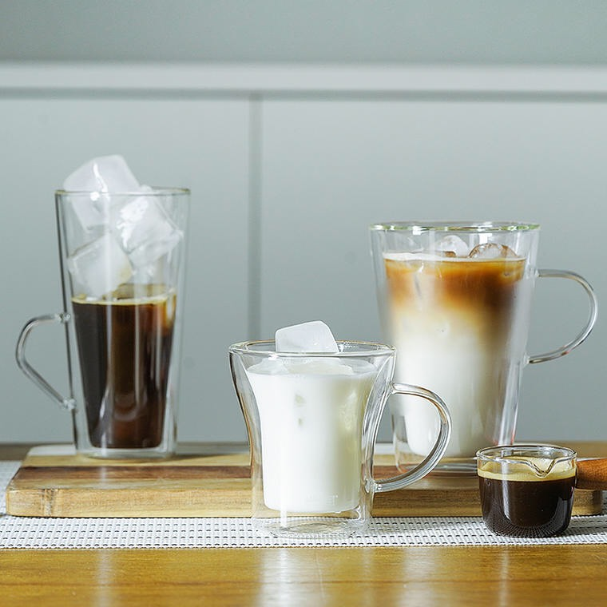
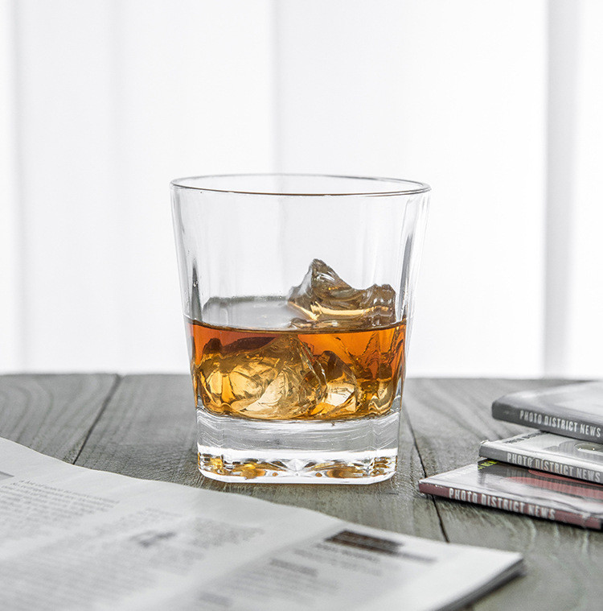
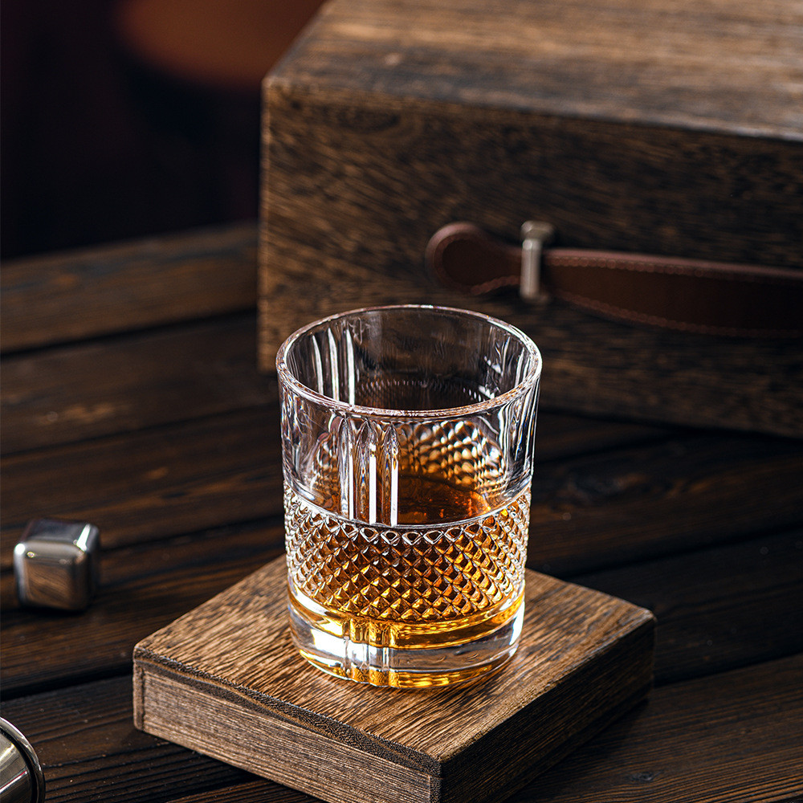
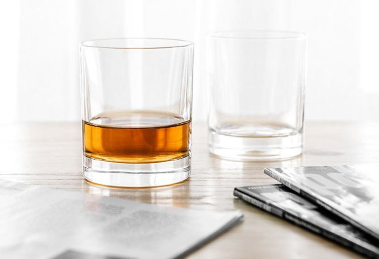
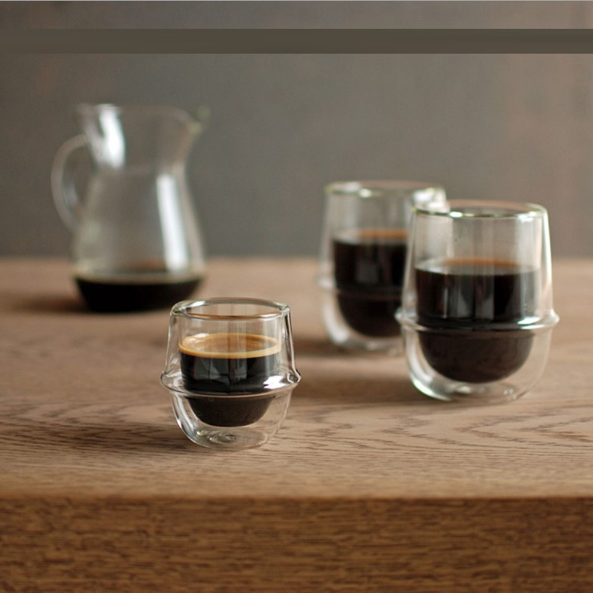
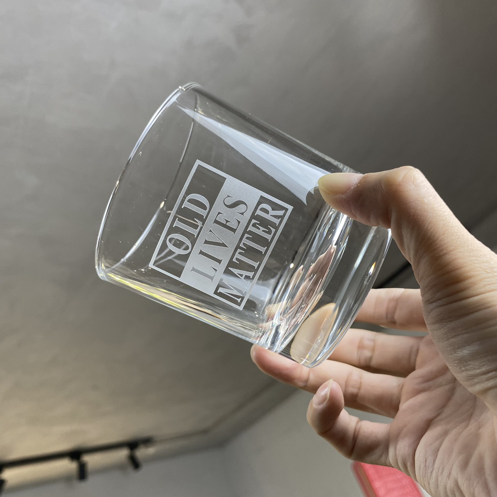
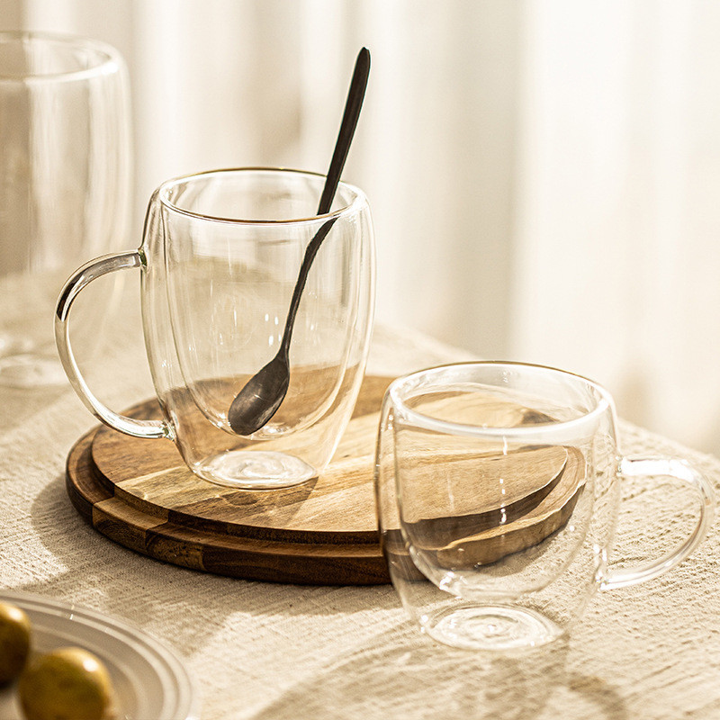
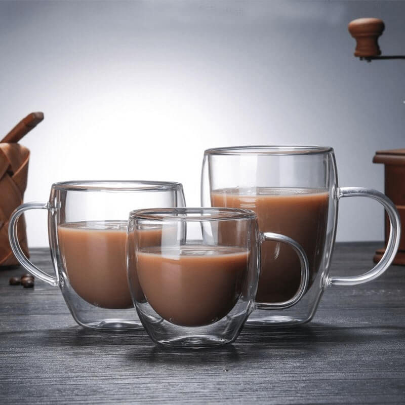

Mục lục bài viết
Loại cốc uống nước nào an toàn cho sức khỏe Nhiều nghiên cứu đã chỉ ra rằng các hóa chất độc hại có trong một số loại vật liệu như nhựa có thể thôi nhiễm vào nước uống, gây ra những tác động tiêu cực đến cơ thể. Chẳng hạn, BPA (Bisphenol A) và phthalates là hai loại hóa chất thường xuất hiện trong nhựa, được biết đến với khả năng gây rối loạn nội tiết tố và liên quan đến nhiều vấn đề sức khỏe như béo phì.
Loại cốc uống nước nào an toàn cho sức khỏe Hơn nữa, cốc thủy tinh còn có khả năng chịu nhiệt tốt hơn so với nhiều loại cốc khác. Bạn có thể thoải mái sử dụng chúng với đồ uống nóng mà không lo lắng về việc giải phóng hóa chất độc hại vào thức uống.
Cốc thủy tinh: Cốc uống nước nào an toàn cho sức khỏe
Cốc thủy tinh đã trở thành sự lựa chọn hàng đầu cho những ai quan tâm đến sức khỏe. Một trong những lý do chính khiến cốc thủy tinh được ưa chuộng là tính an toàn của nó. Khác với các loại cốc làm từ nhựa, cốc thủy tinh không chứa BPA, phthalates hay bất kỳ hóa chất độc hại nào khác có thể thôi nhiễm vào thực phẩm và nước uống.
Các loại cốc thủy tinh phổ biến
Trên thị trường hiện nay, có rất nhiều loại cốc thủy tinh với thiết kế và tính năng đa dạng, phù hợp với nhu cầu sử dụng khác nhau của người tiêu dùng. Dưới đây là một số sản phẩm gợi ý nổi bật mà bạn có thể tham khảo:
Các loại cốc thủy tinh phổ biến
Ly thủy tinh cao cấp
Ly thủy tinh cao cấp Đây là lựa chọn hoàn hảo cho những dịp đặc biệt như tiệc tùng hay các buổi gặp mặt sang trọng. Ly thủy tinh cao cấp thường được làm từ chất liệu thủy tinh borosilicate, giúp chịu nhiệt tốt và không dễ bị nứt vỡ.
Chai thủy tinh bền chắc Chai thủy tinh là lựa chọn lý tưởng cho việc bảo quản nước uống hàng ngày. Với dung tích lớn và thiết kế kín đáo, chai này không chỉ giúp giữ nước luôn sạch sẽ mà còn ngăn chặn bụi bẩn và vi khuẩn xâm nhập.
Loại ly này rất phù hợp cho những ai thường xuyên di chuyển hoặc cần mang theo đồ uống bên mình. Với thiết kế thông minh có nắp đậy kín, ly thủy tinh này giúp giữ cho đồ uống luôn tươi mát và tránh tình trạng rơi vãi khi di chuyển.
Hướng dẫn bảo quản cốc thủy tinh đúng cách Để đảm bảo tuổi thọ và giữ cho cốc thủy tinh luôn trong tình trạng tốt nhất, việc bảo quản đúng cách là rất quan trọng. Dưới đây là một số lưu ý hữu ích mà bạn nên áp dụng:
Rửa sạch ngay sau khi sử dụng:Sau khi sử dụng cốc thủy tinh, hãy rửa sạch ngay lập tức để tránh tình trạng thức ăn hoặc đồ uống bám dính lâu ngày. Sử dụng nước ấm và xà phòng nhẹ để làm sạch. Nếu có vết bẩn khó tẩy, bạn có thể dùng baking soda hoặc giấm trắng để làm sạch hiệu quả mà không làm hỏng bề mặt của cốc.
Tránh va đập mạnh:Cốc thủy tinh có thể dễ bị vỡ nếu bị va chạm mạnh với các vật khác. Hãy đặt chúng ở những nơi an toàn, tránh xa các cạnh bàn hay khu vực dễ bị va chạm. Nếu có trẻ nhỏ trong nhà, hãy cân nhắc việc sử dụng các giá đỡ hoặc kệ cao hơn để tránh tình trạng trẻ nghịch ngợm làm rơi.
Bảo quản ở nơi khô ráo:Khi không sử dụng, hãy bảo quản cốc thủy tinh ở nơi khô ráo và thoáng mát. Tránh để chúng ở những nơi ẩm ướt vì độ ẩm có thể gây ra nấm mốc hoặc mùi khó chịu.
Sử dụng giá treo hoặc hộp đựng:Để tiết kiệm không gian và bảo vệ cốc khỏi va chạm, bạn có thể sử dụng giá treo hoặc hộp đựng chuyên dụng cho cốc thủy tinh. Điều này không chỉ giúp tổ chức không gian bếp mà còn giảm thiểu nguy cơ vỡ.
Kiểm tra định kỳ:Thỉnh thoảng, hãy kiểm tra các cốc thủy tinh của bạn để đảm bảo rằng chúng không bị nứt hay hư hỏng nào khác trước khi sử dụng lại.
Các lưu ý khi chọn mua cốc uống nước an toàn
Khi lựa chọn cốc uống nước, việc chú ý đến chất lượng và tính an toàn của sản phẩm là vô cùng quan trọng. Dưới đây là một số lưu ý giúp bạn có được sự lựa chọn tốt nhất cho sức khỏe của mình:
Các lưu ý khi chọn mua cốc uống nước an toàn
1. Chọn sản phẩm từ thương hiệu uy tín:Việc mua sắm từ các thương hiệu nổi tiếng và có uy tín trên thị trường không chỉ đảm bảo chất lượng sản phẩm mà còn giúp bạn yên tâm hơn về nguồn gốc và quy trình sản xuất.
2. Tránh xa các sản phẩm cốc nhựa kém chất lượng:Nên hạn chế sử dụng cốc nhựa không rõ nguồn gốc, đặc biệt là những loại không ghi rõ thông tin về thành phần.
3. Xem xét khả năng chịu nhiệt:Đối với cốc thủy tinh, khả năng chịu nhiệt là một yếu tố quan trọng cần xem xét. Hãy chọn những sản phẩm được làm từ thủy tinh borosilicate hoặc các loại thủy tinh cao cấp khác.
4. Kiểm tra thiết kế và tính năng sử dụng:Một chiếc cốc tốt không chỉ cần an toàn mà còn phải tiện lợi trong quá trình sử dụng. Hãy tìm kiếm những mẫu cốc có thiết kế dễ dàng để cầm nắm, miệng rộng để dễ dàng vệ sinh, cũng như nắp đậy kín nếu bạn muốn bảo quản đồ uống lâu hơn.
5. Tìm hiểu về khả năng tái chế:Lựa chọn những sản phẩm thân thiện với môi trường cũng rất quan trọng trong thời đại hiện nay. Cốc thủy tinh thường có khả năng tái chế cao hơn so với nhựa.
Loại cốc uống nước nào an toàn cho sức khỏe Việc lựa chọn cốc uống nước an toàn cho sức khỏe không chỉ là một quyết định cá nhân mà còn là một hành động có trách nhiệm đối với sức khỏe của cả gia đình.
Loại cốc uống nước nào an toàn cho sức khỏe Vì vậy, hãy cân nhắc kỹ lưỡng khi lựa chọn sản phẩm cho gia đình mình.